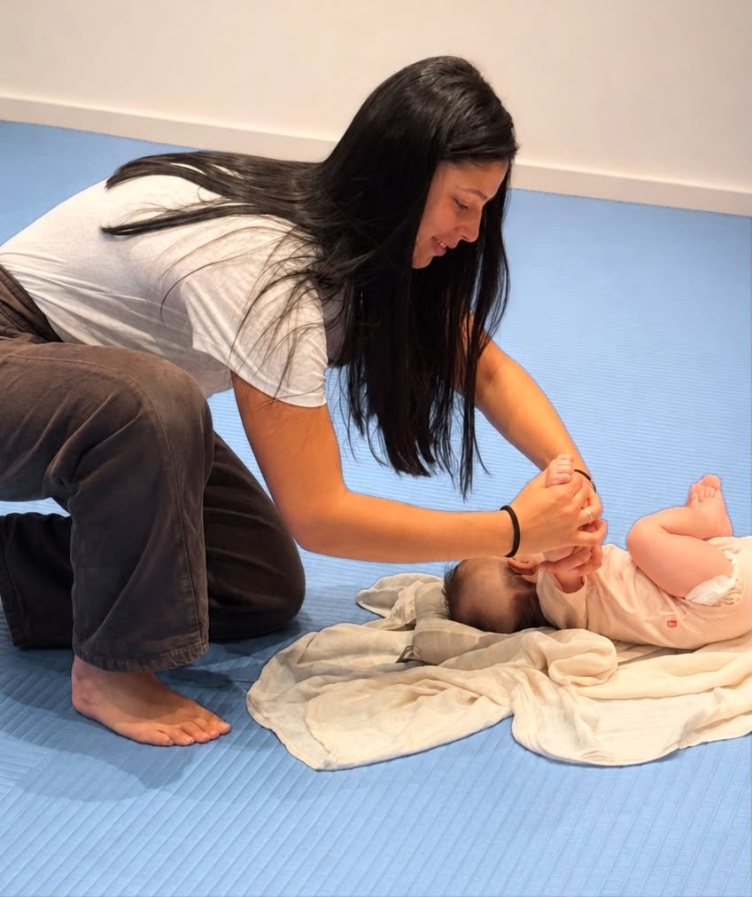
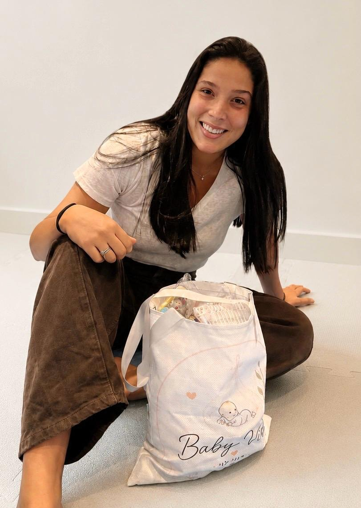
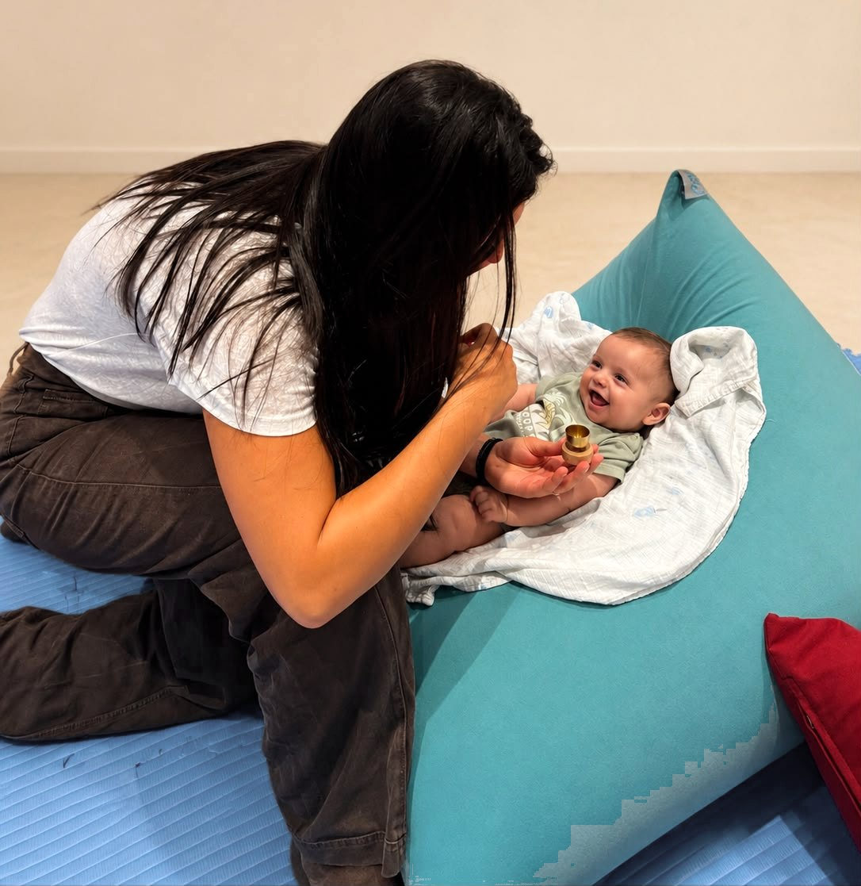
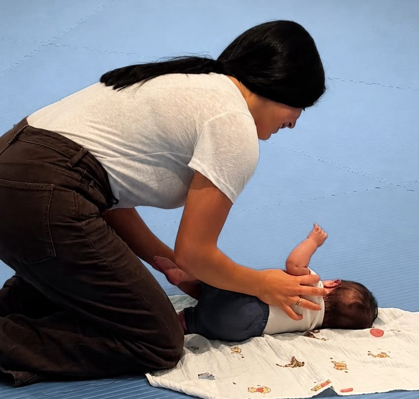
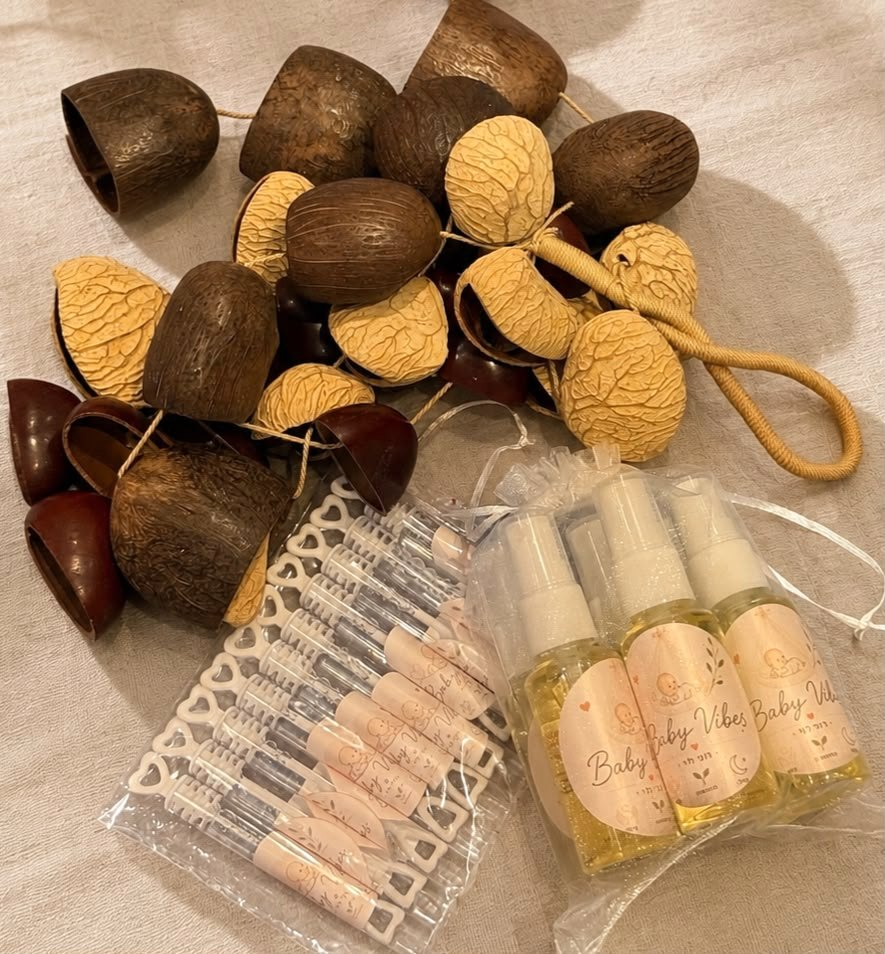
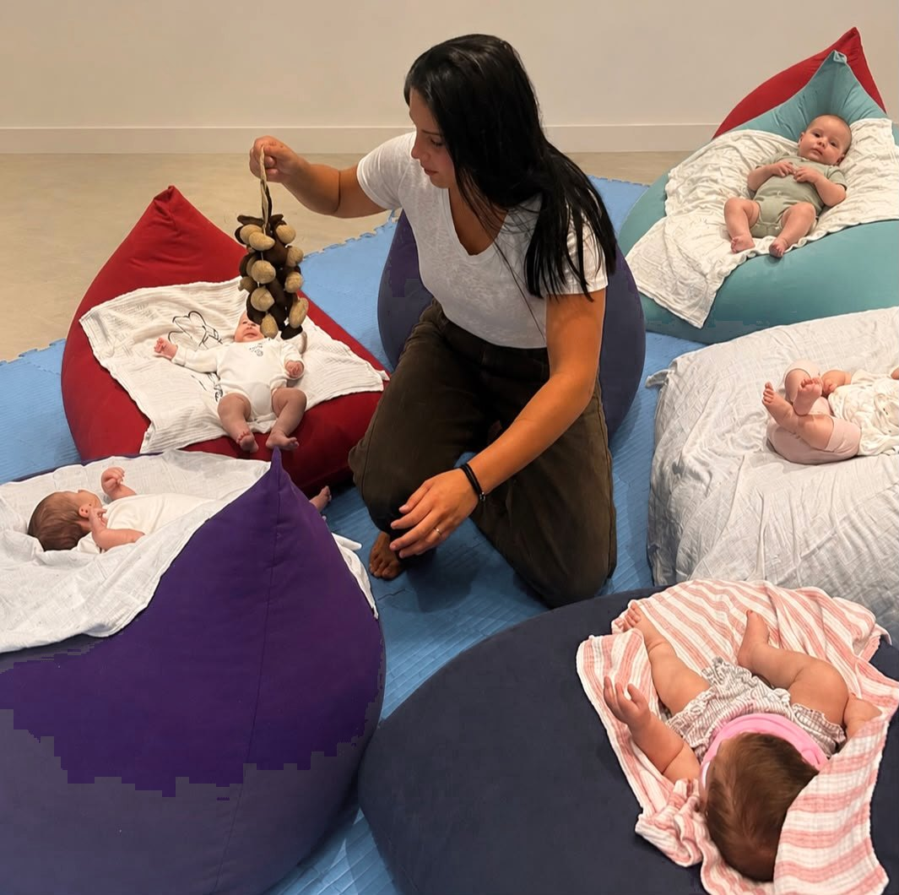
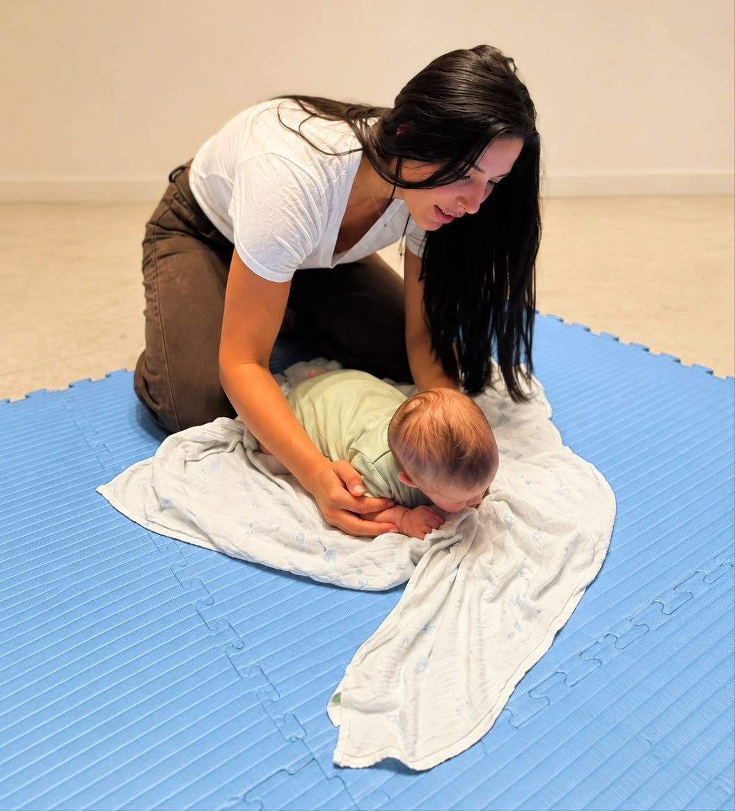

כל תינוק מגיע עם הדרך שלו.
Baby Vibes
כשההורה מרגיש בטוח יותר – גם התינוק מרגיש בטוח יותר.
כל תינוק מגיע עם הקצב, הדרך והצרכים הייחודיים שלו. אני כאן כדי ללוות אתכם, להעניק ידע, ביטחון והכוונה, ולעזור לכם להבין טוב יותר את התינוק שלכם.
ליווי התפתחותי • עיסוי תינוקות
לתיאום שיחת היכרות

נעים להכיר
אני רוני, ו־Baby Vibes נולד מתוך אהבה
מאז שאני זוכרת את עצמי אהבתי להיות בקרבת ילדים ותינוקות — ותמיד ריתקה אותי השאלה איך אפשר לעזור להם להרגיש בטוחים, רגועים ונינוחים יותר.
מתוך האהבה הזו הגעתי לעולם הליווי ההתפתחותי, וכך נולד Baby Vibes — מקום חם ובטוח שבו הורים מקבלים ידע, ביטחון והכוונה, ולומדים להכיר טוב יותר את התינוק שלהם.
אני מאמינה שהתפתחות מתחילה ברגעים הקטנים, ושאין דרך אחת שמתאימה לכולם. אני לא מאבחנת ולא מדביקה תוויות — אני מתבוננת, מקשיבה, ומלווה כל משפחה בקצב שלה.
מלווה התפתחותית · מדריכת עיסוי תינוקות · בעלת הכשרה בייעוץ שינה
למה Baby Vibes
הכי חשוב לי — שתרגישו בטוחים

מקום בטוח גם להורים.
ידע מקצועי בגובה העיניים.
ליווי שמותאם לכל משפחה.
מה אני מציעה
שני עולמות של קרבה והתפתחות

ליווי התפתחותי
ליווי אישי לתינוק ולהורה, דרך תנועה, מגע ומשחק מותאמי גיל. לומדים יחד להכיר את התינוק, לתמוך בהתפתחות שלו בקצב שלו, ולבנות ביטחון בדרך — עם כלים פשוטים ליישום בבית.
לסדנאות לפי גיל
עיסוי תינוקות
רצף מגע רך ובטוח שמחזק את הקשר, מרגיע ומקל על אי-נוחות וגזים. תלמדו כלים פשוטים ליישום בבית, תמיד בקצב של התינוק ומתוך הקשבה.
סדנאות ליווי התפתחותי
קבוצות קטנות, קשב אישי
קבוצות אינטימיות של 4–6 הורים ותינוקות, לאורך 5 מפגשים.

במהלך חמשת המפגשים נעסוק, בין היתר, בנושאים כמו:
- ערסול והחזקות מותאמות
- זמן בטן
- שכיבה על הצד
- סימטריה והעדפת צד
- קו אמצע
- מגע עמוק
- משחק ותקשורת מותאמי גיל
- התאמת הסביבה להתפתחות
במהלך חמשת המפגשים נעסוק, בין היתר, בנושאים כמו:
- זמן בטן מתקדם
- התהפכויות
- סיבוב ציר
- הכנה לזחילת גחון
- ארגון הגוף לקראת זחילה
- קו אמצע והעברות משקל
- משחק המעודד תנועה וחקירה
- מגע כחלק מההתפתחות
כל מפגש נבנה בהתאם לשלב ההתפתחותי של הקבוצה, תוך התייחסות לקצב ולצרכים של כל תינוק.

לפני שניפגש 🤍
לפני תחילת הסדנה תקבלו שאלון היכרות קצר, שיעזור לי להכיר את התינוק שלכם קצת יותר. כך אוכל להבין מה התינוק כבר רכש, אילו נושאים חשובים לכם, ולהתאים את הדגשים בסדנה לקבוצה המשתתפת. כל קבוצה שונה, ולכן גם כל סדנה מקבלת את הדגשים שמתאימים לה.
מילים חמות
מה הורים מספרים
המקום הזה שמור לכם — למשפחות שכבר עברו איתי את הדרך.
ההמלצות הראשונות בדרך אליי, ויתווספו כאן בקרוב 🤍
שאלות נפוצות
כמה דברים שטוב לדעת
מאיזה גיל מתאימות הסדנאות?
הסדנאות מתאימות לתינוקות בגילאי 0–3 ו־3–6 חודשים, כל אחת בהתאם לשלב ההתפתחותי של הקבוצה.
כמה מפגשים יש בכל סדנה?
5 מפגשים, בקבוצה אינטימית של 4–6 הורים ותינוקות — כדי לשמור על קשב אישי לכל תינוק.
צריך ידע או ניסיון מוקדם?
ממש לא. הכול נעשה בגובה העיניים, בפשטות ובלי מונחים מסובכים. אני כאן כדי ללוות, להסביר ולתת ביטחון.
ומה לגבי ייעוץ שינה?
יש לי הכשרה בייעוץ שינה, והידע הזה משתלב בליווי כאשר יש בכך צורך — אבל הוא אינו השירות המרכזי שלי.
איך מתחילים?
מתחילים בשיחת היכרות קצרה. לפני הסדנה תקבלו שאלון קצר שיעזור לי להכיר את התינוק שלכם ולהתאים את הדגשים לקבוצה.
יצירת קשר
בואו נכיר
הדרך הכי פשוטה להתחיל היא שיחת היכרות קצרה. אפשר לכתוב לי, להתקשר, או להשאיר פרטים ואחזור אליכם.